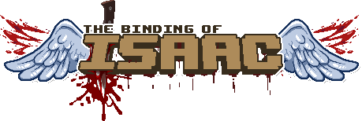
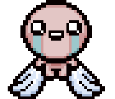
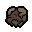
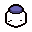
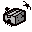
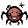
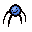

Familiares são pequenos companheiros, geralmente gerados por itens passivos, que seguem e
auxiliam Isaac.
Familiares são pequenos companheiros, geralmente gerados por itens passivos, que seguem e
auxiliam Isaac.
Os efeitos dos familiares incluem (mas não estão limitados a) geração de
pickup,
disparo de familiares que disparam suas próprias lágrimas contra os inimigos e
orbitais
que atuam como escudos de projéteis e/ou causam dano de contato.
Muitos desses familiares
(especialmente familiares de geração de pickup e de tiro) seguem
atrás de Isaac. Quando Isaac pega vários desses familiares a seguir,
eles formam uma linha
atrás dele, do mais antigo para o mais novo (sendo o familiar mais próximo atrás de Isaac o mais
antigo coletado)
em vez de se sobreporem constantemente no mesmo lugar atrás de Isaac.
Isaac não pode ter mais de 64 familiares ao mesmo tempo. Isso inclui aranhas azuis e moscas,
itens familiares como Dry Baby,
(em Repentance) coágulos de sangue de Tainted Eve, etc.
Ganhar mais do que isso resultará na destruição de familiares, com aranhas azuis e moscas sendo
destruídas primeiro. 
| Nomes | Icon | Sobre |
|---|---|---|
| Guppy's Head |  |
Gera de 2 a 4 Moscas Azuis aliadas que causam dano aos inimigos. |
| Jar of Flies | Matar um inimigo adiciona uma mosca ao pote, até um máximo de 20. Ao usar, libera Moscas Azuis igual ao número de moscas no pote. | |
| Compost |  | Dobra as Moscas Azuis e as Aranhas Azuis de Isaac, ou gera uma se Isaac não tiver nenhuma. Converte os captadores da sala atual em Blue Flies ou Blue Spiders. |
| Everything Jar |  | Gera certos itens com base em quantas cargas ele possui. Se estiver totalmente carregado, terá um dos muitos efeitos exclusivos. |
| Nomes | Icon | Sobre |
|---|---|---|
| Box of Spiders |  | Gera de 4 a 8 Aranhas Azuis que causam 2x o dano de Isaac aos inimigos. |
| Compost | Dobra as Moscas Azuis e as Aranhas Azuis de Isaac, ou gera uma se Isaac não tiver nenhuma. Converte os captadores da sala atual em Blue Flies ou Blue Spiders. | |
| Infestation 2 |  | Gera Aranhas Azuis aliadas de inimigos mortos. |
| Sissy Longlegs |  |
Gera um familiar que vagueia aleatoriamente, ocasionalmente gerando Aranhas
Azuis. (em Repentance) Encanta brevemente os inimigos ao entrar em contato. |